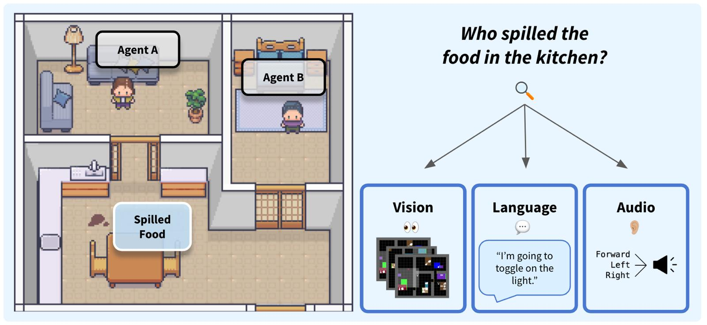
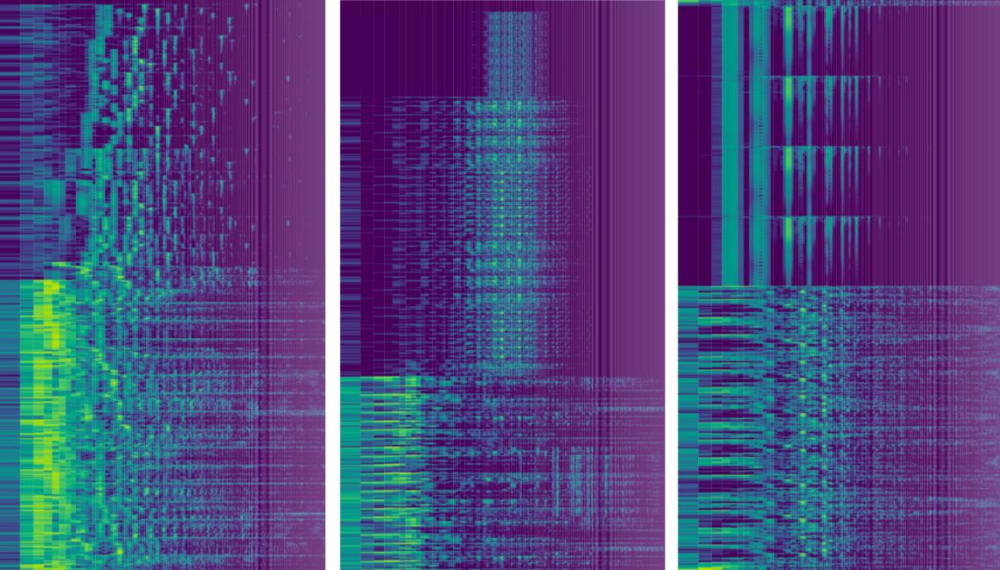
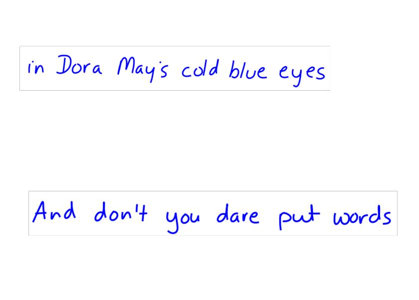
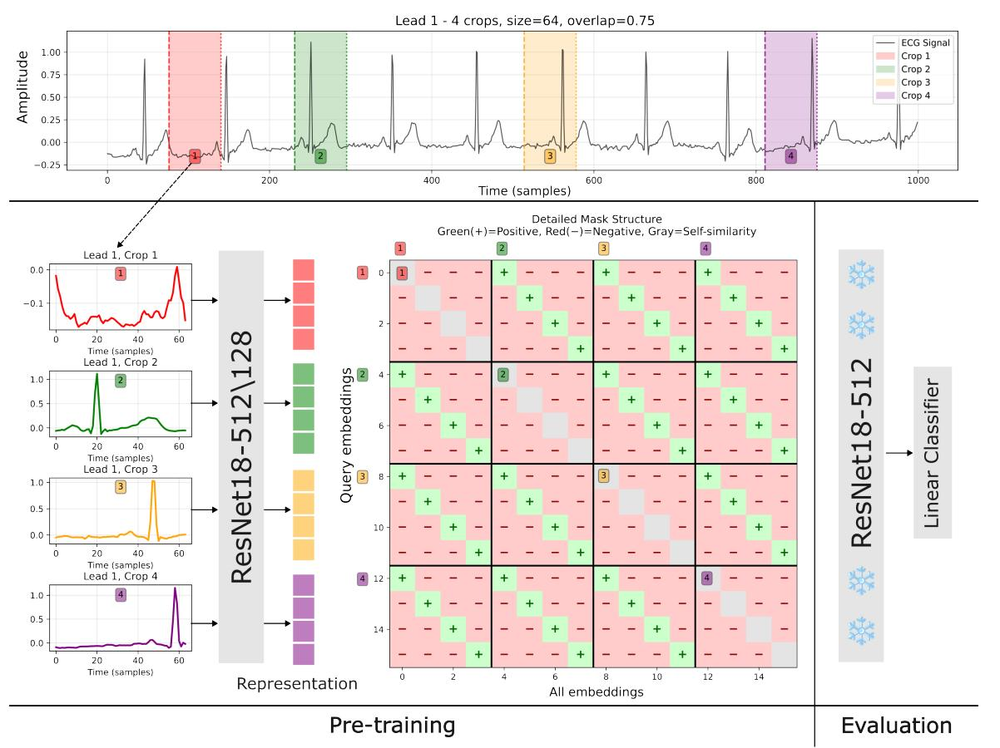
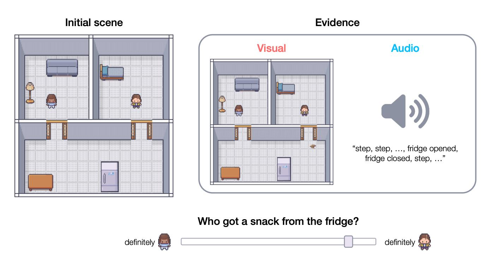
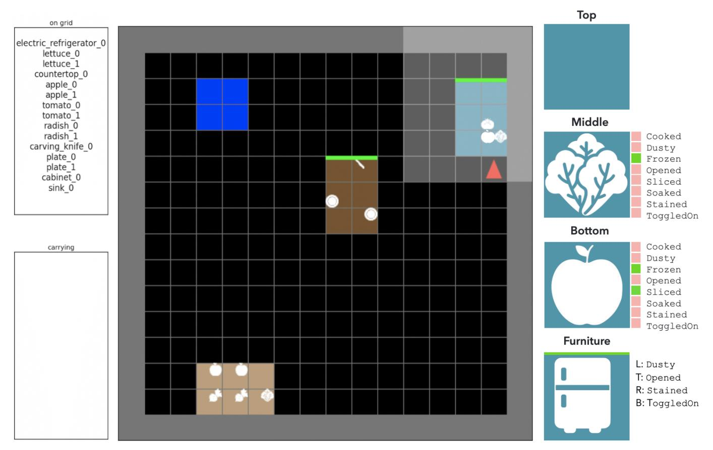
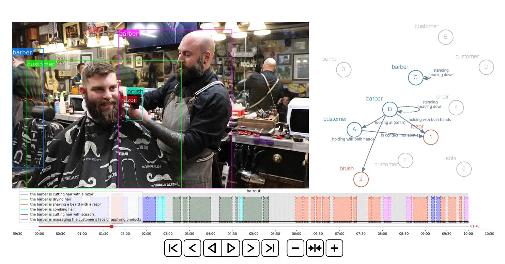

|
Zhuoyi (Zoey) Huang I'm a Member of Technical Staff at xAI, where I work on scaling reinforcement learning for science and coding. Previously, I worked at Microsoft Turing and Microsoft AI Development Acceleration Program on long-horizon computer-use RL and healthcare foundation models with Mass General Brigham. I also interned with the Meta Creation ML team, the Microsoft Research Visual Computing Group with Jingdong Wang, and Tencent AI Lab. At Stanford, I worked with Jiajun Wu, Tobias Gerstenberg, Fei-Fei Li, Ehsan Adeli, Stephanie Chao, and Zhengyuan Zhou. Outside of work, I co-founded Currents. |

|
|
My work spans large scale RL, self-play, multimodal long-horizon reasoning, representation learning, and applications in embodied AI, media, and healthcare. I keep returning to three problems: 🤖 real-world RL with sparse and subjective rewards; 🧪 simulations and AI for science, from virtual cells to digital twins; and 🧠 BCI and cognitive learning, or how AI can augment rather than replace humans. I'm always happy to exchange ideas, explore collaboration, mentor junior researchers, and chat with peers and senior researchers. You can set up a 15-minute virtual coffee chat with me here. |
News |
| 2026 Jan | Joined xAI as Member of Technical Staff, working on reinforcement learning for science and coding. |
| 2026 Feb | Currents joined the NVIDIA Inception Program. |
| 2025 Dec | Attending NeurIPS in San Diego to present our work on synthetic ECG generation. It received the Best Research Paper Award at NeurIPS GenAI4H! |
| 2025 Oct | Our work on learning ECG representations via poly-window contrastive learning appeared at BHI. |
| 2024 Oct | MARPLE appeared at NeurIPS Datasets and Benchmarks 2024. |
| 2024 May | Whodunnit? appeared at CogSci 2024. |
| 2023 July | I joined MAIDAP as an Applied Scientist. |
| 2023 June | I graduated from Stanford with an M.S. in Computer Science. |
Research |
|
 |
MARPLE: A Benchmark for Long-Horizon Inference
Emily Jin, Zhuoyi Huang, Jan-Philipp Fränken, Weiyu Liu, Hannah Cha, Erik Brockbank, Sarah Wu, Ruohan Zhang, Jiajun Wu, Tobias Gerstenberg NeurIPS Datasets and Benchmarks, 2024 project page |
|
 |
High-Fidelity Synthetic ECG Generation via Mel-Spectrogram Informed Diffusion Training
Zhuoyi Huang, et al. NeurIPS GenAI4H, 2025 |
|
 |
TrInk: Ink Generation with Transformer Network
Zezhong Jin, Shubhang Desai, Xu Chen, Biyi Fang, Zhuoyi Huang, Zhe Li, Chong-Xin Gan, Xiao Tu, Man-Wai Mak, Yan Lu, Shujie Liu EMNLP, 2025 |
|
 |
Learning ECG Representations via Poly-Window Contrastive Learning
Yi Yuan, Joseph van Duyn, Runze Yan, Zhuoyi Huang, Sulaiman Vesal, Sergey Plis, Xiao Hu, Gloria Hyunjung Kwak, Ran Xiao, Alex Fedorov BHI, 2025 |
|
 |
Whodunnit? Inferring what happened from multimodal evidence
Sarah A. Wu, Erik Brockbank, Hannah Cha, Jan-Philipp Fränken, Emily Jin, Zhuoyi Huang, Weiyu Liu, Ruohan Zhang, Jiajun Wu, Tobias Gerstenberg CogSci, 2024 |
|
Paper
|
Racial and Ethnic Disparities in Child Abuse Identification and Inpatient Treatment
Fereshteh Salimi-Jazi, Norah E. Liang, Zhuoyi Huang, Lakshika Tennakoon, Talha Rafeeqi, Amber Trickey, Stephanie D. Chao JAMA Network Open, 2024 |
|
 |
Mini-BEHAVIOR: A Procedurally Generated Benchmark for Long-horizon Decision-Making in Embodied AI
Emily Jin, Jiaheng Hu, Zhuoyi Huang, Ruohan Zhang, Jiajun Wu, Li Fei-Fei, Roberto Martín-Martín Agent Learning in Open-Endedness, 2023 |
|
Paper
|
Disparities in Detection of Suspected Child Abuse
Modupeola Diyaolu, Chaonan Ye, Zhuoyi Huang, Ryan Han, Hannah Wild, Lakshika Tennakoon, David A. Spain, Stephanie D. Chao Journal of Pediatric Surgery, 2023 |
|
 |
MOMA-LRG: Language-Refined Graphs for Multi-Object Multi-Actor Activity Parsing
Zelun Luo, Zane Durante, Linden Li, Wanze Xie, Ruochen Liu, Emily Jin, Zhuoyi Huang, Lun Yu Li, Jiajun Wu, Juan Carlos Niebles, Ehsan Adeli, Li Fei-Fei NeurIPS Datasets and Benchmarks, 2022 |
| More publications on Google Scholar |
Experience |
| xAI · Member of Technical Staff · 2026–present |
| Microsoft · Senior Applied Scientist / Applied Scientist · 2023–2026 |
| Stanford University · M.S. in Computer Science · 2021–2023 |
| Stanford Medicine · Collaboration with Stephanie D. Chao |
Teaching, interviews and activitiesOver the years, I've been lucky to learn from generous mentors and inclusive communities. These experiences have made me want to give back through teaching, reviewing, and outreach.
Stanford CS 231N. Deep Learning for Computer Vision.
Stanford CS 131. Computer Vision: Foundations and Applications.
Stanford CS 224W. Machine Learning with Graphs.
Stanford CS 246. Mining Massive Data Sets. Peer reviewer for MIDL 2024, ICML 2024, ICLR 2025, AAAI 2025 GenPlan Workshop, and ICLR 2026. |
|
Website source from Jon Barron. |